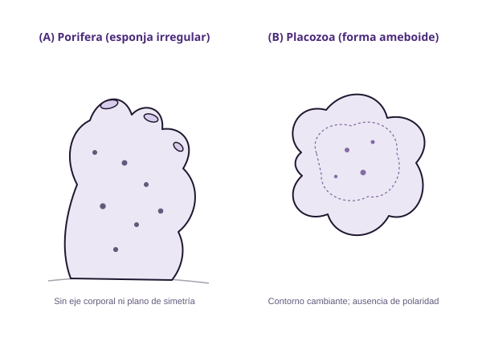
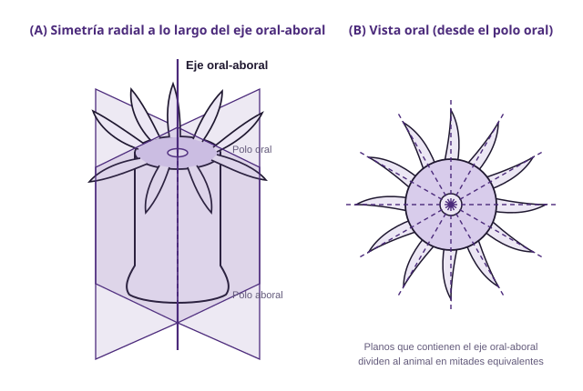
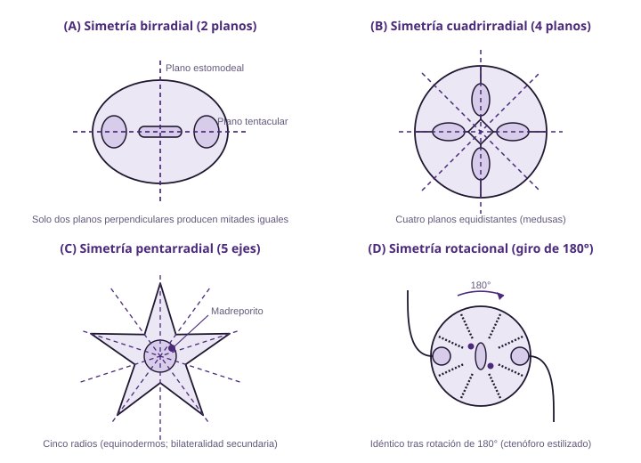

Objetivos de aprendizaje
- Diferenciar los principales tipos de simetría corporal (asimetría, esférica, radial y bilateral) y reconocer sus ejes y planos anatómicos asociados.
- Relacionar las capas germinales primarias (ectodermo, mesodermo y endodermo) con los tejidos, órganos y cavidades internas principales en los metazoos triploblásticos.
- Comparar la organización estructural de los grados acelomado, blastocelomado y celomado.
La arquitectura de los animales corporales se conoce como bauplan o plan corporal. A pesar de la gran diversidad de planes corporales en el reino animal, existen limitaciones a las clases de estructuras que un animal puede exhibir, las cuales son dictadas tanto por las leyes de la física como por las tareas que deben completar los organismos para sobrevivir y reproducirse. Así, puesto que todos los animales deben adquirir, digerir y metabolizar nutrientes, así como también distribuir los productos utilizables de dichos procesos metabólicos a todo su cuerpo, deben poseer una arquitectura corporal que facilite dichas funciones. Lo mismo aplica para todas las demás características de la vida, desde la excreción y la egestión hasta la reproducción y la adquisición de O2 para la respiración celular. El presente capítulo se basa en el trabajo de para introducir al lector a una serie de conceptos claves con respecto a la morfología de los invertebrados.
1.1Simetría corporal
El primer aspecto a tomar en cuenta del plan corporal de un animal es la presencia o ausencia de simetría corporal. La simetría es definida por (p. 44) como la disposición regular de las estructuras corporales con respecto a un eje concentro del cuerpo. Si un animal puede ser dividido en dos mitades a lo largo de al menos un plano, de tal forma que las mitades resultantes sean similares entre sí, se dice que dicho animal es simétrico.

No todos los animales poseen un eje corporal ni un plano de simetría. Estos animales son conocidos como asimétricos (Figura 1.1), y los casos más paradigmáticos son las esponjas (con excepciones, como algunas esponjas esféricas) y los placozoos (Figura 1.2 al margen). Dividir una esponja o un placozoo en dos mitades no producirá dos mitades remotamente iguales, por lo cual incumplen la regla de simetría.

Por otro lado, la simetría esférica es una forma poco común de simetría corporal, observada en criaturas que carecen de un eje corporal y tienen, valga la redundancia, la forma de una esfera, por lo cual sus partes corporales se arreglan concéntricamente o radiando de un punto central (Figura 1.3). Las esferas tienen un número infinito de planos de simetría y solo se observa en ciertas esponjas (como ocurre en la Tethya actinia en la Figura 1.4 al margen).


Una forma de simetría corporal más común es la simetría radial. Cuerpos con dicha simetría suelen tener una forma cilíndrica, con uno o más ejes alrededor de los que se arreglan las partes corporales. La simetría radial implica la disposición de las partes corporales equitativamente alrededor del eje corporal. Cualquier plano de sección que pase a lo largo de dicho eje producirá dos mitades similares. Al imaginarse un pólipo del filo Cnidaria (Figura 1.5), es posible definir el eje corporal oral-aboral y concebir el arreglo de los tentáculos alrededor de dicho eje. Si se seccionara el pólipo en un plano que pase a lo largo del eje, las dos mitades resultantes con sus tentáculos en los bordes del cilindro serían iguales.

La simetría radial es sumamente rara en la naturaleza, y muchas formas de simetría radial aparentes en realidad terminan siendo otras formas de simetría especializadas, las cuales se consideran modificaciones de la simetría radial. Un ejemplo de ello es la simetría birradial (Figura 1.6A), la cual ocurre donde porciones del cuerpo están especializadas y solo dos planes de sección dividen al animal en mitades equivalentes, tal y como ocurre en muchas anémonas de mar (las cuales pertenecen al filo Cnidaria). La anémona de mar Epiactis australiensis ilustra la simetría birradial (Figura 1.7 al margen), la cual puede aparentar radialidad pura al ojo desnudo si no se inspecciona más allá de los tentáculos.


Otra forma de simetría especializada es la simetría rotacional de algunos ctenóforos (Figura 1.6D). En este caso, la simetría radica en la invariancia del organismo al rotarlo alrededor de su eje central, más que en la reflexión especular (o imagen espejo) a través de planos imaginarios de sección. A modo ilustrativo, algunos ctenóforos pueden ser rotados 180° o menos, recuperando exactamente su configuración original, razón por la cual esta forma de simetría recibe el adjetivo de rotacional.
Asimismo, numerosas medusas exhiben simetría cuadrirradial (Figura 1.6B), mientras que la mayoría de los equinodermos manifiestan simetría pentarradial (Figura 1.6C).
1.2Grados de construcción triploblástica
En el grado acelomado (del griego a, «sin»; koilos, «hueco, cavidad»), el mesodermo constituye una masa tisular relativamente sólida —el mesénquima o parénquima, en ocasiones con pequeños espacios intersticiales o lagunas— que ocupa por completo la región comprendida entre la epidermis y el tubo digestivo (Figura 1.1A). Esta organización se presenta en filos como Xenacoelomorpha, Platyhelminthes, Entoprocta, Cycliophora, Gnathostomulida, Micrognathozoa, Nematomorpha y Gastrotricha.
En la gran mayoría de los restantes animales triploblásticos se desarrolla un espacio real lleno de líquido entre la pared corporal y el intestino. En diversos grupos —como Rotifera, numerosos Nematoda, Priapulida, Tardigrada y Kinorhyncha— dicha cavidad no se origina dentro del mesodermo ni queda revestida por peritoneo; en consecuencia, los órganos internos y las gónadas yacen libres en su interior bañados directamente por el fluido (Figura 1.1B). Dado que este espacio suele representar remanentes persistentes del blastocele embrionario, se prefiere el término descriptivo blastoceloma frente a la denominación clásica de «pseudocele».
Por último, en los animales celomados o eucelomados (como los anélidos, equinodermos y cordados), la cavidad surge en el interior del propio mesodermo y queda delimitada por un delgado epitelio mesodérmico denominado peritoneo (Figura 1.1C). El peritoneo parietal recubre la cara interna de la musculatura de la pared corporal, mientras que el peritoneo visceral envuelve el tubo digestivo y se prolonga en los mesenterios dorsal y ventral que sostienen las vísceras. De este modo, órganos como el intestino y las gónadas quedan en posición retroperitoneal, aislados de la luz celómica por la lámina peritoneal.